The Import Library dialogue provides a standard way to import library parts in both the PADS Library V9.x format (schematic and layout) and the BSDL format (schematic part only). BSDL files for large IC's can be downloaded from most manufacturers websites while PADS Library V9 files for library parts can be found on most part supplier sites or directly from EDA part suppliers such as Ultra-Librarian, SnapEDA and PCB Library Expert.
Proteus also includes seamless part import with Samacsys (library loader) but this process does not require the dialogue form, instead working with the Samacsys library loader software directly.
You'll find worked examples of the import workflow with all major vendors here.
The dialogue form can be launched from the Import Part command on the Library menu in either the schematic or the layout module.
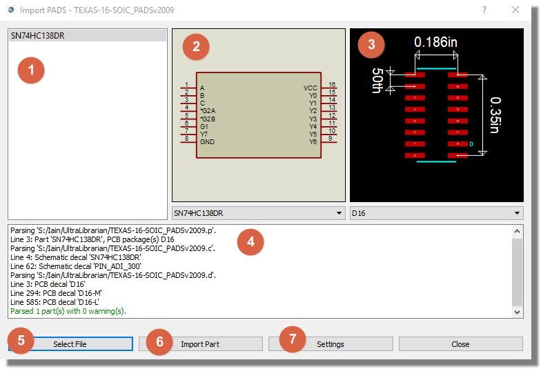
Example Part Import dialogue - see below for more information.
All of the preview areas at the top and the import log will be blank until you use the Select File command to load a part.
This column will show the name of the part (or parts) that can be imported from the selected files.
This preview will show the schematic body of the selected part in the left hand preview list.
This preview will show the PCB footprint body of the selected body in the left hand preview list.
There is no PCB footprint associated with BSDL files and so this area will remain blank.
This area will populate with log messages and warning messages during the parsing of the files. You should check any warning messages that appear closely to make sure that the resulting parts in Proteus are suitable for your design needs.
This is where the import process starts. You will be presented with a file selector from which you can load a supported file type into Proteus.
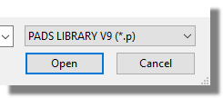
Filtering the File Selector to show PADS Library format.
This button will be disabled until after a file has been loaded and parsed via the Select File button on the left.
After selecting your file and reviewing the import log for any warnings or errors this Import Part button is pressed to bring the parts into the Proteus libraries.
If both a schematic component and layout footprint exist, then the import will run the familiar Make Package dialogue followed by the Make Device dialogue wizard. If only one or the other exists (e.g. no footprint with BSDL) then only the relevant wizard will be launched.
This button will be disabled until after a file has been loaded and parsed via the Select File button on the left.
The settings dialogue gives you additional options and control over the import and resulting parts. We'd recommend that unless parts look odd or incorrect you leave these options alone but you'll fine detailed discussion of the various options in the following topic.
One particularly useful setting is the 'launch body editor' setting for schematic parts. The body editor screen allows you to break a device into multiple elements which can be really helpful for large pin count components. If you like to work with multi-element devices on the schematic you might want to lower this threshold setting and then make use of the body editor during the import process.
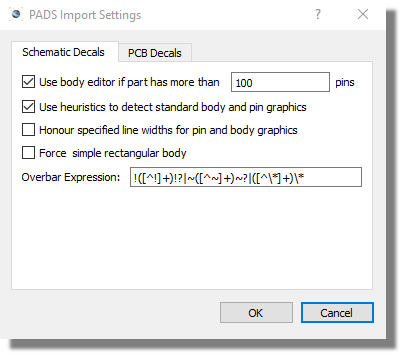
Configuration Settings for Schematic Decals
When you are importing large IC's or BGA's a single schematic component can be unwieldy and hard to work with. Often, engineers like to break down big parts into several smaller components performing logical functions (e.g. group the power pins into a component). Finally, treatment of NC pins depends on personal preference with some users happy to hide NC pins completely while others prefer all pins to be drawn on the component body.
The body editor screen solves all these problems and more. It allows you to:
We have chosen to show the body editor by default when the number of pins on the part exceeds 100. However, if you often find that you want to edit the components that your are importing you should drop this number down so that the body editor is shown for all but the simplest of components.
See Also:
Proteus comes equipped with standard body shapes and pin graphic types. When this option is selected the parser will detect the graphic shapes and replace with standard Proteus equivalents. We have found on balance that this produces better results and leaves a consistent look and feel to the schematic regardless of how many different sources are used for the parts.
If however you prefer the exact graphic styles used by a particular vendor you can turn the heuristic mode off via this checkbox.
As with the heuristic graphics we have defaulted to using a standard line width for all imported data. This provides consistency on the schematic and generally works better. If you prefer the specific widths specified in the PADS Library files to be honoured then you can select this option.
When selected the shape of the imported component body will be forced rectangular. This is intended for use as a fix for the unusual case where the component just looks badly wrong when imported in its default state.
Unfortunately, different vendors use different characters to specify that a pin name has an overbar. This field is a regular expression to parse and detect that a pin name should have an overbar drawn above it.
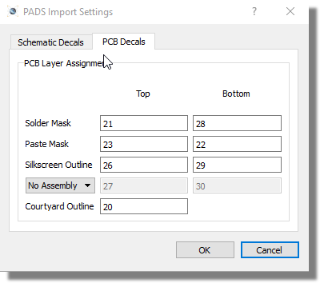
Configuration Settings for PCB Decals.
On the PCB side the configuration options are all related to layer assignments. Depending on the vendor from which a PADS V9 is generated the layer ID's may vary. For example, where Vendor A uses ID 21 for top solder mask , vendor B may use an ID of 30.
We've provided what we believe to be a working set for most part vendors
but if you find that a PCB import is on incorrect layers or has layers
missing then you'll need to make the appropriate changes here. If you
do come across this please also drop us a line to support@labcenter.com
so that we can improve or extend in future releases.
To import a library part with PADS Library V9 files
1) Download the part you want onto your computer. This will almost always be in a zip file.
2) If the part doesn't come from a vendor source that we directly support (see list below) then you'll need to extract all the files from the zip into a folder of your choice.
3) From the Library Menu in Proteus select the Import Part command
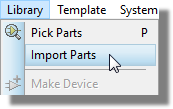
4) Click on Select File and use the file selector on the right hand side to select either generic PADS Library V9 files or the vendor of your choice.
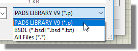
5) Choose the appropriate file to load. This will normally be a zip file if the vendor is selectable in the file selector or a .p file if you've had to extract the parts into a folder.
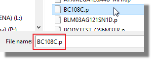
6) Review the parse log and the previews to make sure everything looks good. Use configuration settings if need be to fix problems.
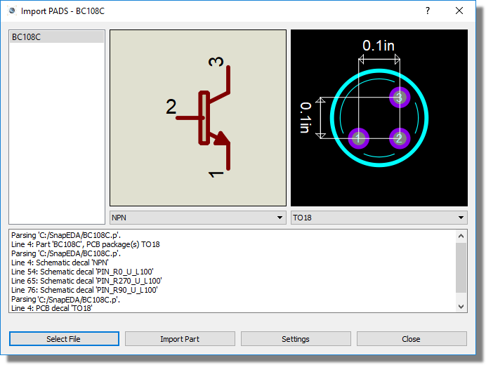
7) Use Import Part and follow the wizards to bring first the footprint and then the component into Proteus. This will both put the parts into your libraries and deposit them in the parts bin of the current project ready for placement. You should have an end parsed result that looks like the following:
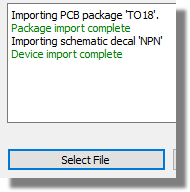
What you are actually doing at this last stage is running the Make Package tool to create the footprint and then running the Make Device tool to make the schematic component. The areas where input may be required from you are in the library choice and the description and categorization of the part.
To import a library part with BSDL files
1) Download the part you want onto your computer. This may be a zip file or a loose BSDL file.
2) If it's in a zip file you'll need to extract the BSDL file from the zip into a folder of your choice.
3) From the Library Menu in Proteus select the Import Part command
4) Use the file selector on the right hand side to select BSDL files.
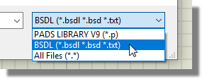
5) Choose the appropriate BSDL file to load.and then review the parse log and the preview to make sure everything looks good. It's normal to not have a PCB preview because BSDL files don't contain PCB footprint data.
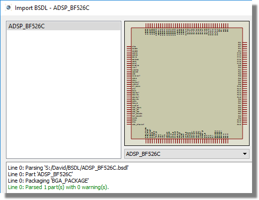
7) Use Import Part and follow the wizard to bring the component into Proteus. This will both put the schematic part into your library and deposit it in the parts bin of the current project ready for placement.
Unlike the PADS Library import you will always run the body editor when you import the BSDL file. This is because the file does not contain graphical body data and so we need to construct the body or bodies from your choices.
See Also: